Web App
LEDGER帳簿システム
個人事業主・フリーランスのための、ブラウザで無料で使える帳簿システムです。収入・経費を簡単な入力で記録すると、複式簿記の仕訳が自動で作られ、損益計算書・貸借対照表・青色申告決算書の転記用データまで出力できます。データはお使いのブラウザ内だけに保存され、サーバーには送信されません。
- 無料
- インストール不要
- データは端末内のみ
- 白色申告・青色申告に対応
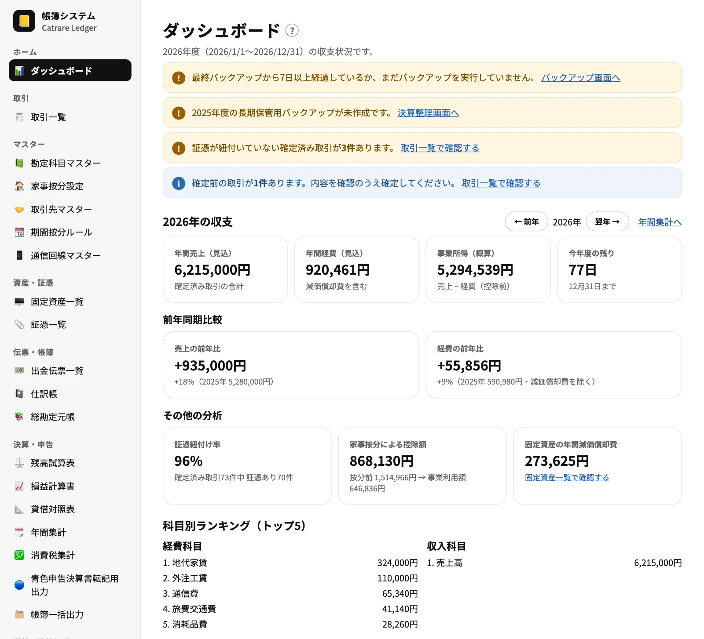
Features
記帳から確定申告用の集計まで
かんたん入力・自動仕訳
収入・経費・資産・証憑を、借方・貸方を意識せずに登録できます。内部では複式簿記の仕訳を自動で作り、借方と貸方の合計が必ず一致する状態を保ちます。同じ日付・金額・取引先の取引が既にあるときは、登録の前に確認します。
事業と個人のお金の移動（振替）
事業用口座から生活費を引き出す、個人のお金を事業用口座へ入れる、預金利息が入るといったお金の動きを、区分「振替」で記録できます。お金の動きと口座を選ぶだけで、事業主貸・事業主借などの仕訳が自動で作られます。
家事按分
自宅家賃・通信費など、仕事とプライベート兼用の支出を科目ごとの按分率で自動計算。期間ごとに按分率を切り替えるルールや、通信回線ごとの按分にも対応します。
証憑管理・出金伝票
領収書・請求書などの証憑を取引に紐付けて保存し、日付・金額・取引先で検索できます（電子帳簿保存法を意識した設計）。取引に付ける証憑は、登録済みのものから検索して選べます（紐付いていないものが先に並びます）。領収書のない支出は出金伝票で記録・印刷できます。
固定資産・減価償却
備品などを固定資産として登録すると、取得日・取得価額・申告方式（白色／青色）から選べる経費化の方法を画面が判定し、推奨の方法を初期値にします。定額法のほか、一括償却資産・少額減価償却資産の特例も選べ、償却の仕訳は年度締めで自動で作ります。適用の可否は最終的に国税庁の資料・税務署・税理士でご確認ください。
消費税区分・税率別の集計
取引ごとに消費税区分（課税・軽減税率・非課税など）を記録し、課税売上・課税仕入を税率ごとに集計します。区分は勘定科目の既定から自動で入り、絞り込んだ取引をまとめて直すこともできます。税額は記帳した金額から計算した概算です。
帳簿・帳票の出力
仕訳帳・総勘定元帳・残高試算表・損益計算書・貸借対照表・固定資産台帳・年間集計を表示し、年度ごとにまとめてCSV（ZIP）出力・連続印刷できます。白色申告の収支内訳書や青色申告決算書へ転記するための集計も出力できます。
年度締め・バックアップ
決算整理と年度締めで1年分の帳簿を確定（締め後は編集不可）。JSONバックアップ（パスフレーズ暗号化も選択可）でいつでも復元でき、操作ログも確認できます。
カード引落消込・入金管理
クレジットカードの利用と口座引落を突き合わせて消し込み、売掛金の入金も記録できます。消込の一覧で、明細と合計額を確認できます。
取り込み・出力
取引のCSV取込と、WORKBILL で確定した請求データの取り込みを「インポート」画面にまとめています。帳簿・集計はCSV/JSONで出力できます。
WORKBILL・DEDUCT と連携
WORKBILL の請求データを売上として取り込めます。確定申告準備の DEDUCT へは、事業所得を渡すJSONを出力でき、選んだフォルダ（連携フォルダ）へ書き出すと DEDUCT から一覧で取り込めます。
画面ガイド・用語集
画面ごとの説明（タイトル横の「?」で表示）、入力欄のヒント、用語集を用意し、簿記に不慣れでも迷いにくくしています。
Screens
帳簿づけの実際の画面
掲載している画面は、架空の個人事業主「サンプル太郎」のダミーデータです（取引先名・金額はすべて架空のものです）。
日付・金額・按分率を入れるだけ
収入・経費・振替を1件ずつ登録する画面です。日付・勘定科目・取引先・金額を入れると、帳簿（仕訳）は自動で作られます。家事按分率を入れると、事業で使った分の金額（事業利用額）を自動で計算します。
- 登録前に、作成される仕訳を確認できます
- 勘定科目ごとの按分率と消費税区分が初期値として入ります
- 同じ内容の取引が既にあれば、登録の前に確認します
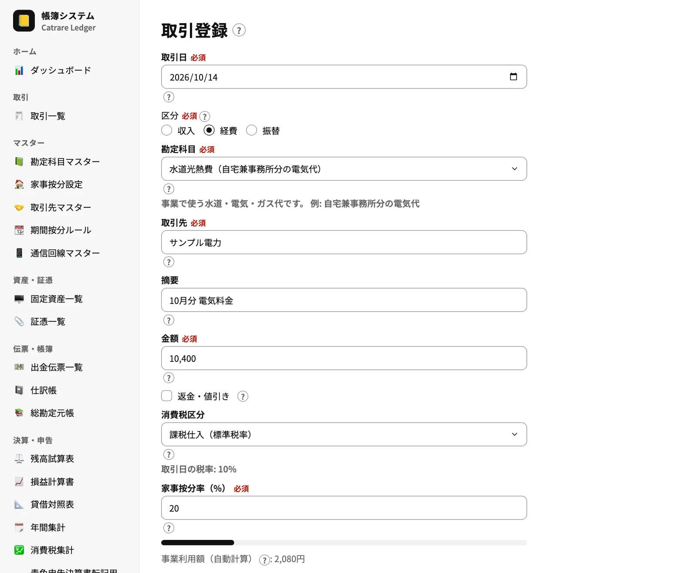
取引を一覧で確認・絞り込み
登録した取引を、期間・区分・勘定科目・取引先・消費税区分で絞り込めます。家事按分率と事業利用額、入金状態、証憑の有無、確定状態が一覧で分かり、列見出しから並べ替えられます。
- 未入金（売掛）の取引は、入金があったときに消し込み
- 編集・複製・削除は一覧から（削除は論理削除）
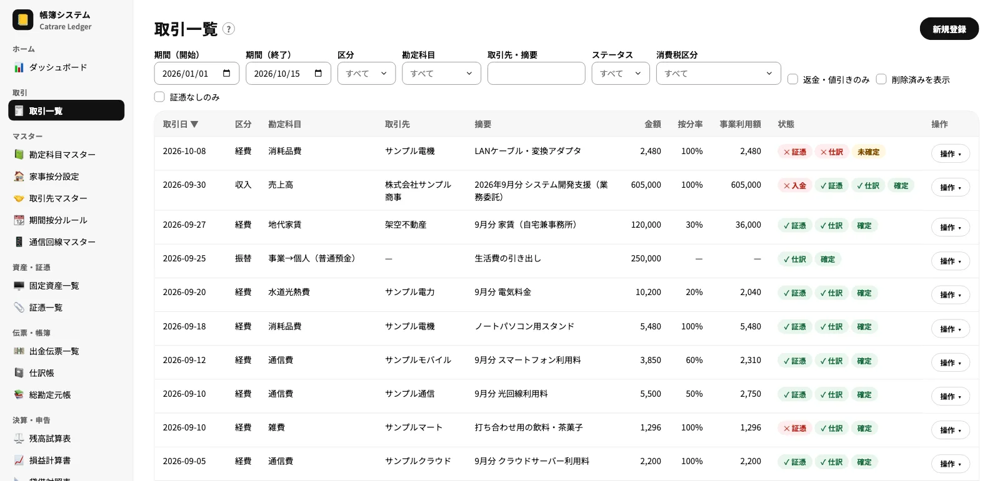
仕訳は自動で作られる
取引から自動で作られた仕訳、入金消込、カード引落、手動仕訳が、仕訳帳に日付順に並びます。家事按分のある取引は、事業分と事業主貸に自動で分けて記録されます。
- 借方と貸方の合計が一致しない仕訳は保存できません
- 検索結果はCSVで出力できます
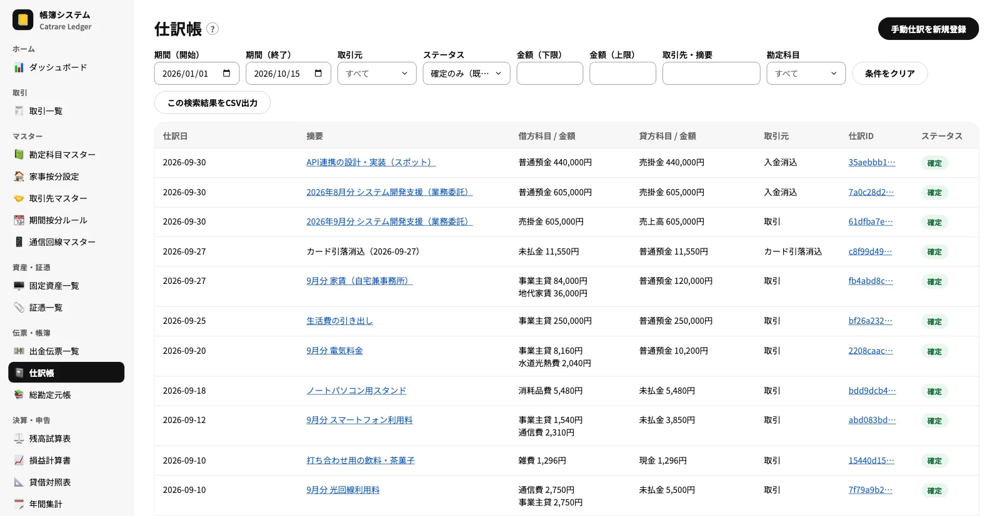
家事按分を科目ごとに設定
自宅家賃や通信費など、仕事とプライベート兼用の支出の按分率を科目ごとに決めておきます。根拠のメモも残せて、取引登録のたびに自動で反映されます。
- 期間ごとに按分率を切り替えるルール（活動状況の変化に対応）
- 複数回線の通信費は回線ごとに按分
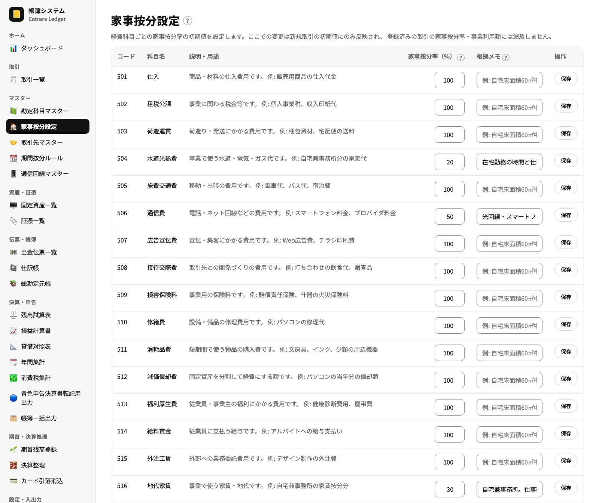
証憑を取引に紐付けて保存
領収書・請求書などの証憑を、推奨ファイル名（日付_金額_取引先_内容）で保存し、取引と紐付けて管理します。日付・金額・取引先で検索でき、取引に紐付いていない証憑もすぐ見つかります。
- プレビュー・編集・削除は一覧から
- 証憑が付いていない確定済み取引はダッシュボードで警告
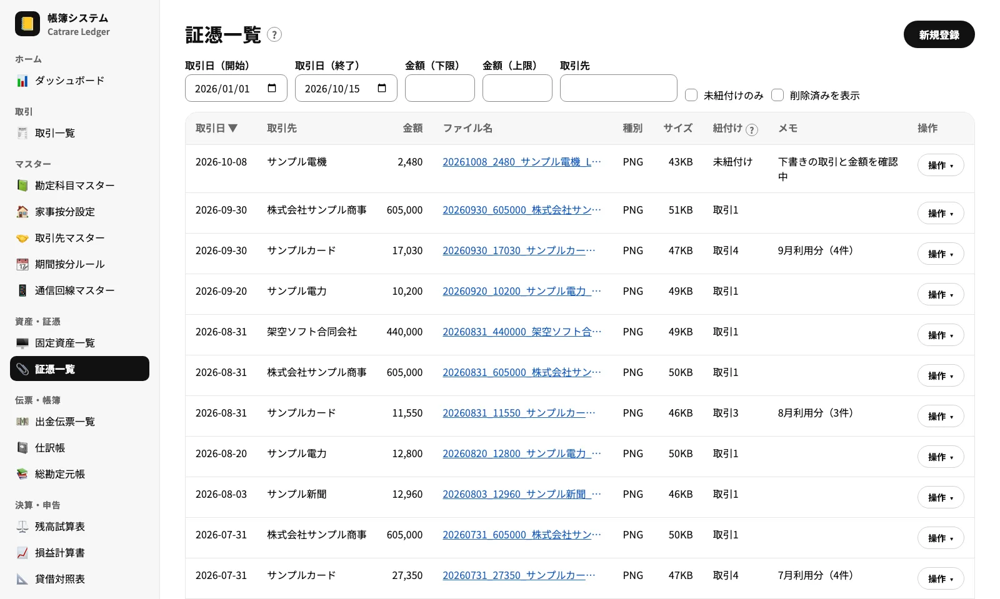
固定資産の経費化の方法を選ぶ
パソコンなどの固定資産を登録すると、取得日・取得価額・申告方式から選べる経費化の方法を判定し、推奨の方法を初期値にします。定額法・一括償却資産・少額減価償却資産の特例から選び、毎年の償却の仕訳は年度締めで自動で作られます。
- 青色申告決算書の「減価償却費の計算」欄への転記用の表を表示
- 家事按分のある資産は、事業で使った分だけを経費に
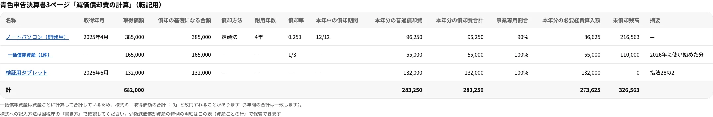
消費税を税率ごとに集計
取引に記録した消費税区分から、課税売上・課税仕入を税率ごとに集計します。課税売上高・課税売上割合と、税額の概算も表示します。消費税の申告書へ転記する数字の確認に使えます。
- 区分が未設定・違っている取引は、絞り込んでまとめて変更
- 集計と明細はCSVで出力できます
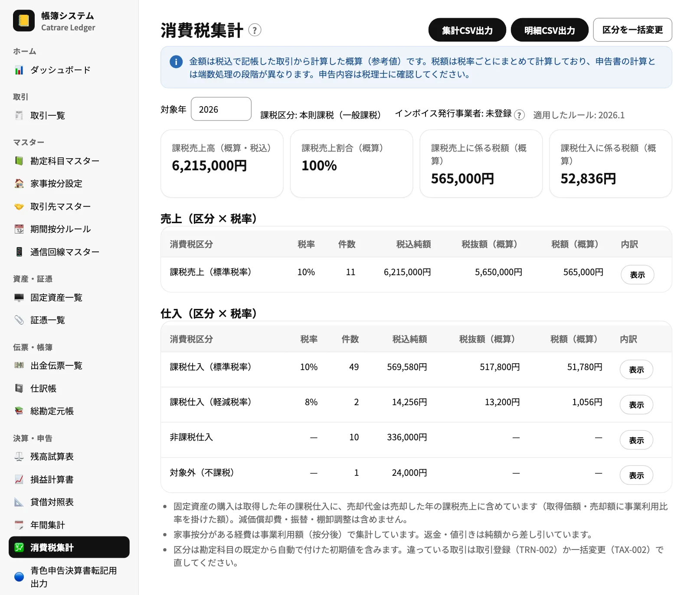
帳簿をまとめて出力
年度を選んで、仕訳帳・総勘定元帳・残高試算表・損益計算書・貸借対照表・固定資産台帳・年間集計をまとめて出力します。確定申告のときや、帳簿の提示を求められたときに便利です。
- 選んだ帳簿のCSVを1つのZIPファイルに
- 帳簿ごとに改ページして連続印刷（PDF保存も可）
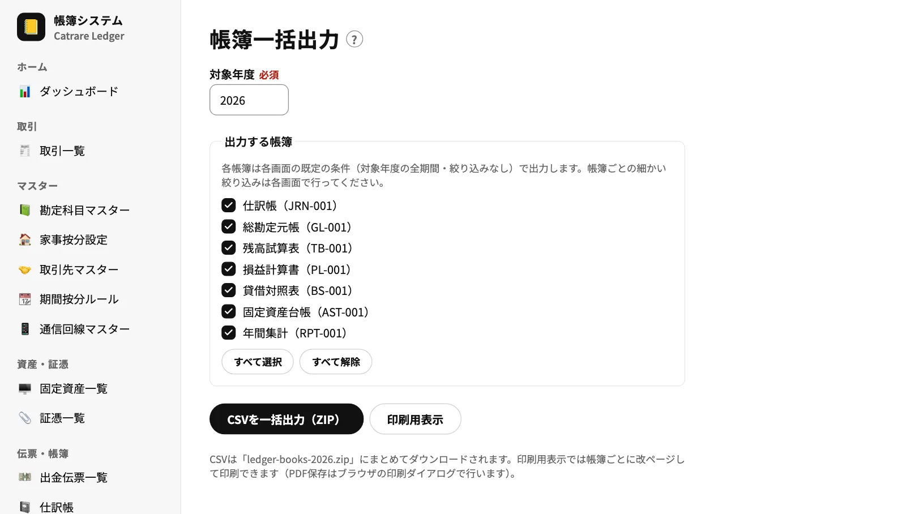
Reports
帳簿と確定申告用の出力
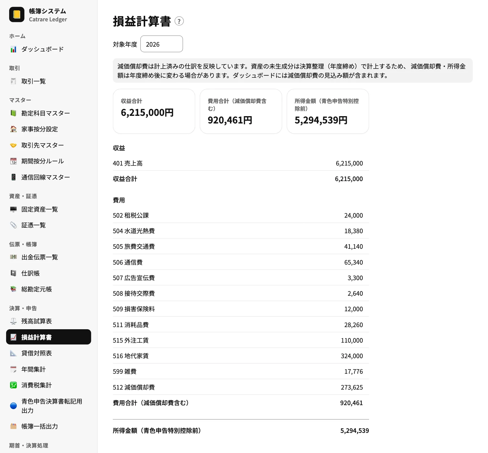
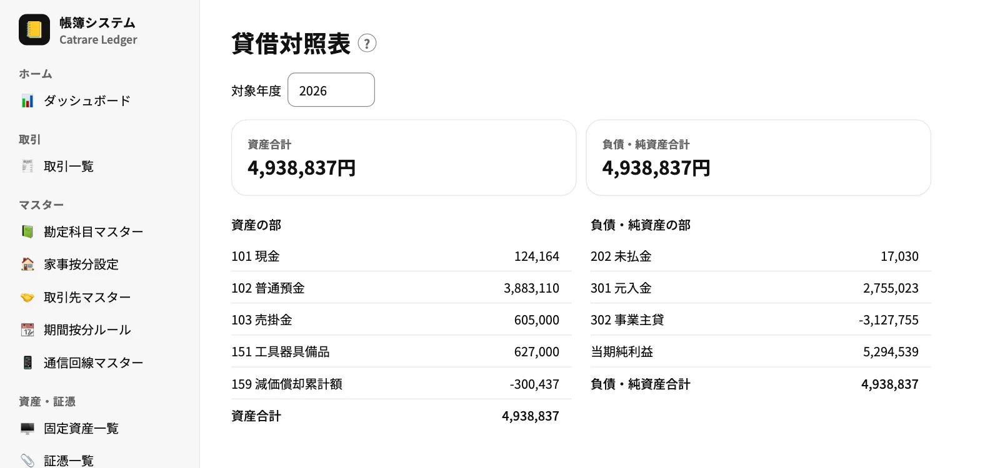
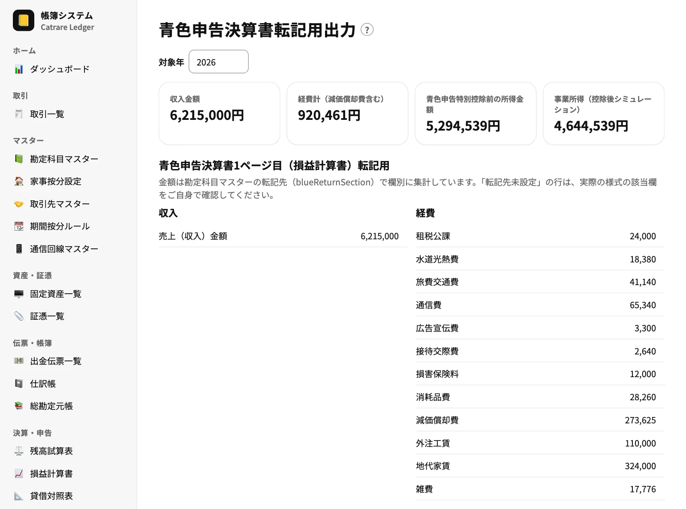
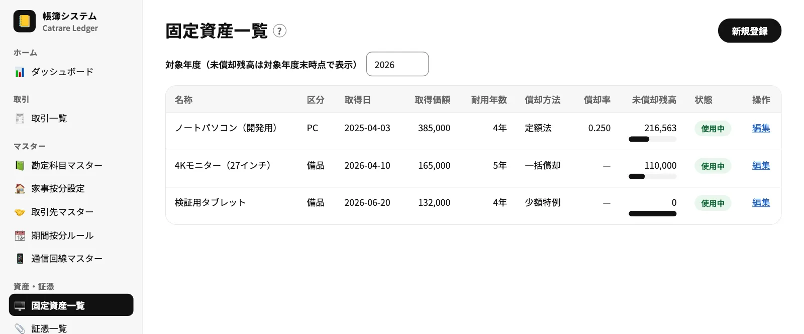
Tech Stack
ブラウザだけで完結する構成
| 実行方式 | ブラウザで動く静的Webアプリ（サーバー処理なし）。GitHub Pages で配布 |
|---|---|
| フロントエンド | TypeScript ／ React 19 ／ Vite ／ React Router（HashRouter） |
| UI | Tailwind CSS v4 ／ shadcn/ui（Base UI）を土台にした共通UIパッケージ ／ Noto Sans JP（自己ホスト）／ Recharts（グラフ） |
| データ保存 | IndexedDB（Dexie.js）。すべてブラウザ内に保存し、サーバーへは送信しません |
| 状態管理・検証 | Zustand ／ Zod（入力・バックアップの検証） |
| 日付・CSV | date-fns ／ PapaParse |
| 暗号化 | Web Crypto API（バックアップのパスフレーズ暗号化） |
| テスト・品質 | Vitest（単体テスト）／ Playwright（E2E）／ Biome（Lint・Format） |
| 開発体制 | pnpm モノレポで WORKBILL・LEDGER と UI 部品を共有し、設計書を正としてテスト駆動で段階的に開発しています。 |
ローカルファースト
帳簿データはお使いのブラウザのIndexedDBにだけ保存し、ネットワークへは送信しません。バックアップファイルで別の端末へ移せます。
複式簿記の整合性
仕訳は借方と貸方の合計が一致しなければ保存できません。金額は整数（円）で扱い、削除はすべて論理削除、締め済みの年度は編集できません。
安全な出力
印刷用の帳票はReactコンポーネントで描画し、CSV出力にはインジェクション対策を入れています。
設計書ファースト
実装の前に設計書とテストケースを整え、テスト駆動で段階的に開発しています。
Notes
ご利用にあたって
本システムは記帳・集計を補助するツールで、税務判断を自動化するものではありません。家事按分率・資産計上・減価償却・青色申告特別控除の適用などは、国税庁の資料、税務署、税理士等でご確認ください。
データはお使いのブラウザにだけ保存されます。ブラウザのデータ削除や端末の変更で失われることがあるため、バックアップ画面から定期的にバックアップを保存してください。
PCのブラウザでの利用を想定しています。
FAQ
よくある質問
本当に無料で使えますか？
はい、無料です。登録・ログインも不要で、ブラウザで開くとすぐに使えます。
入力したデータはどこに保存されますか？
お使いのブラウザ内（IndexedDB）にだけ保存し、サーバーには送信しません。ブラウザのデータを削除すると失われるため、バックアップ画面から定期的にバックアップを保存してください。
簿記の知識がなくても使えますか？
収入・経費を日付・勘定科目・取引先・金額で登録すると、仕訳（借方・貸方）は自動で作られます。画面ごとのガイドと用語集も用意しています。
青色申告・白色申告に使えますか？
青色申告決算書（損益計算書）と、白色申告の収支内訳書へ転記するための集計を出力できます。確定申告書の作成・提出は、国税庁の確定申告書等作成コーナーなどで行ってください。
家事按分はできますか？
自宅家賃や通信費など、仕事とプライベート兼用の支出は、科目ごとに決めた按分率で事業利用額を自動で計算します。期間ごとに按分率を切り替えることもできます。
領収書などの証憑も管理できますか？
領収書・請求書などの証憑を取引に紐付けて保存し、日付・金額・取引先で検索できます。領収書のない支出は出金伝票で記録できます。
別のパソコンでも使えますか？
バックアップ画面でバックアップファイルを保存し、移したいパソコンのブラウザで復元すると、同じデータを使えます。
スマートフォンでも使えますか？
PCのブラウザでのご利用を想定しています。
請求書は作れますか？
請求書と稼働報告書は、姉妹アプリのWORKBILL（無料）で作成できます。WORKBILLで確定した請求データは、LEDGERへ取り込めます。
LEDGER を使ってみる
登録・ログインは不要です。ブラウザで開くとすぐに使えます。初めて開いたときは空の状態です。
PCのブラウザでのご利用を想定しています。